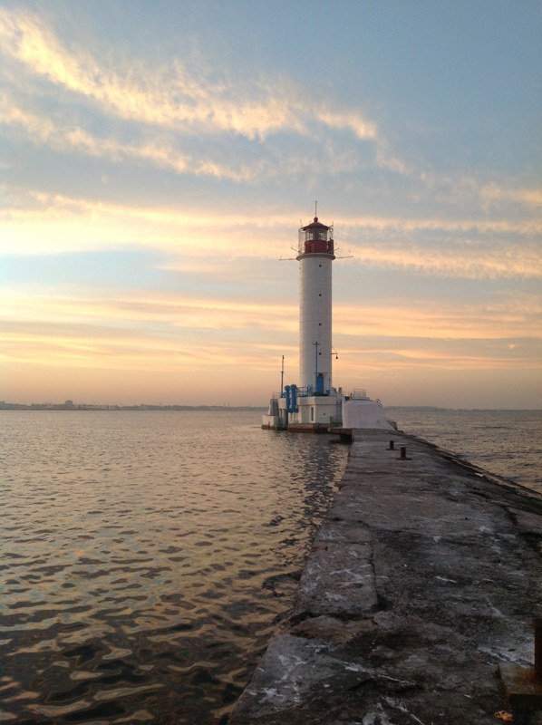

- Одесская улица Преображенская переименовывалась семь раз и успела побывать также Срединной, Троцкого, улицей 10-летия Рабоче-крестьянской Красной армии, Короля Михая, Советской армии и два раза (в начале и конце этого процесса) — Преображенской.
- В Одессе в 1891 г. появился первый на территории Российской империи автомобиль с двигателем внутреннего сгорания «Одесского листка» B. Навроцкого. Говорят, и первый штраф за превышение скорости случился в Одессе.
- Одесский суржик, впитавший многонациональность этого города, родился, по мнению многих, на Еврейской улице. Из слияния русско-украинско-еврейского колорита родились выражения, вроде «Я имею вам сказать пару слов» вместо «Я хочу вам сказать пару слов».
- Потемкинская лестница — это подарок князя Воронцова своей жене Елизавете. «Потемкинской» она стала после того, как C. Эйзенштейн включил ее в ряд ключевых эпизодов своей эпохальной ленты «Броненосец "Потемкин"». Узнаваемый символ Одессы длиной 142 м состоит из 192 ступеней и входит в десятку красивейших лестниц Европы. Особый размах лестнице придает перспектива, заложенная в ее техническое решение — основание (21,7 м) действительно намного шире, чем верхняя часть (12,5 м).
ОДЕССА
Феномен у Черного моря

За 11 лет правления градоначальника Армана Эмманюэля Дю Плесси Одесса превратилась из портового селения в один из блестящих городов Европы. Бронзовый памятник Дюку появился через 6 лет после его смерти, в 1828 г.
ЗАГАДКИ «ЮЖНОЙ ПАЛЬМИРЫ»
Родившийся в Одессе советский писатель и драматург Лев Славин как-то сказал о своем любимом
городе, что его с одной стороны омывает море, а с другой — степь. Причем степь — украинская,
а море — многонациональное. Одесса впитала и соединила великое множество культур, породив
«одесский феномен»:
особый колорит городской жизни, неповторимый язык и характер его жителей.
- Дворцы: Ансамбль Воронцовского дворца (1826-1828 гг.), дворец Гагарина (1842-1850 гг.), дворец Лопухина (XIX в.);
- Культовые сооружения: лютеранская кирха (кон. XIX в.), Троицкая Греческая церковь (нач. XIX в. - нач. XX в.), Спасо-Преображенский кафедральный собор (2002 г.), Главная синагога Одессы (1850 г.);
- Национальный академический театр оперы и балета (1887 г.), Городская дума, Старая биржа (XIX в.), Сабанские казармы (XIX в.), порт, трамвайные остановки (нач. XX в.), морские ванны и купальни (1900-е гг.), Соборная площадь, дом Еврейского товарищества (1830-е гг.), ул. Дерибасовская, Приморский бульвар (Потемкинская лестница), Французский бульвар, Большой фонтан, «Тещин мост» (1968-1969 гг.), Центральный парк культуры и отдыха им. Т. Г Шевченко, Военный спуск.
- Дата основания: 22 августа (2 сентября) 1794 г
- Город-герой: с 1 мая 1945 г.
- Этнический состав: украинцы — более 61%, русские — 29%, болгары 1,3%, евреи —1,2%, молдаване, белорусы, армяне, поляки и другие — около 7,5% (2001 г.)
- Лиманы: Куяльницкий, Хаджибейский, Сухой.
- Города-спутники: порты Ильичёвск и Южный.
- Порт: Одесский морской торговый порт.
Умеренно континентальный. Средняя температура января: -1*С. Средняя температура июля: +21,*С. Летом температура нередко поднимается выше +35*С. Среднегодовое количество осадков: 440 мм. Среднегодовая температура воды: +10.9*С. Количество солнечных дней в году: более 290.
На юге Украины, в равнинной (средняя высота над уровнем моря 50 м) области берега Одесского залива, в северо-западной части Черного моря, расположился всеми любимый, прославленный в литературе, кинематографе и фольклоре город с особым шармом — Одесса. Каким-то чудом ее жители, в чьих жилах течет кровь смешанных за века многих национальностей, умеют в кратчайшей форме передать суть и парадоксальность многих жизненно важных явлений. Это третий крупнейший по величине украинский город после Киева и Харькова. А его жители первые по цитируемости не только на территории бывшего СССР, но и далеко за его пределами. Здесь, на пересечении важнейших путей из Северной и Центральной Европы в Азиатский и Ближневосточный регионы, с древних времен обитали люди, о чем говорят многочисленные артефакты археологических раскопок в Одессе и Одесской области. Следы первых поселений относятся к эпохе верхнего палеолита. А к VIII-VII вв. до н. э. данная территория уже была обжита: представителями культуры переходной эпохи от бронзового века к железному — киммерийцами, затем вытеснившими их скифами и сарматами. Позже Северное Причерноморье подверглось греческой колонизации: здесь искали следы греческой колонии Истрианон, гаваней Истриан и Исиаков, а также, по одной из версий происхождения названия Одессы, ученые (особенно екатерининского времени) связывали ее прошлое с находившимся на юго-западе от нее греческим портовым городом Одессос. К XIII в. эти места, как и многие на северном побережье Черного моря, облюбовали итальянские купцы, которые организовывали собственные укрепления: на итальянских картах того времени появилась Джинестра (так по-итальянски называется распространенный в этих местах кустарник дрок) — конкретная пристань или же целый причерноморский район (точно неизвестно). Решение османского султана Мехмеда II Завоевателя, или иначе эль-Фатиха (1432-1481 гг.), контролироватьпролив Босфор и взимать дань со всех проходящих судов парализовало торговлю и вытеснило итальянцев, приведя в упадок основанные ими поселения. В следующий раз будущая область Одессы упоминается в XIV в. в связи с селением Хаджибей (Гаджибей, Качибей, Коцюбеев, Какубия), которое, по довольно спорным версиям, могли основать татары либо литовцы. Как стратегически важное место на карте Северного Причерноморья, данная территория переходила из рук в руки: жители Хаджибея оказывались то в границах Крымского ханства (1441-1783 гг.), то под властью его влиятельной союзницы Османской империи (1299-1923 гг.). За это время Хаджибейская крепость могла быть разрушена и восстановлена не раз. Так и возникли в исторической науке две версии о том, где находилась взятая русскими войсками 14 сентября 1789 г (в ходе Русско-турецкой войны 1787-1791 гг.) Хаджибейская крепость, или Ени-Дунья (с тур. «Новый Мир»), построенная в 1764 г. в самом Хаджибее или же рядом с ним (тогда это две разные крепости). В бою отличился отряд испанского дворянина, находившегося на российской службе, графа Хосе де Рибаса, более известного в России как Иосиф (Осип) Михайлович Дерибас (1751-1800 гг.), основатель Одессы.
- Площадь: 163 км2
- Население: 1 008 058 чел (2011 г.).
- Самая высокая точка: 65м(район лютеранской церкви).
- Самая низкая точка: -4.2м (Куяльницкий лиман).
База военно-морского, торгового, рыболовного флота. Грузооборот морского порта — 28 млн т. (2009 г.). Промышленность: машиностроение (судостроение, станкостроение, производство подъемно-транспортного, холодильного, медицинского, торгового, полиграфического и другого оборудования, почвообрабатывающих агрегатов, вычислительных машин и проч.), металлообработка, химическая, нефтеперерабатывающая, химико-фармацевтическая, пищевая, легкая (джутовая, текстильная и др.), деревообрабатывающая Сельское хозяйство: растениеводство (овощеводство и выращивание бахчевых культур, виноградарство), животноводство. Рыболовство туризм, санаторно-курортные и оздоровительные услуги, торговля, финансовые услуги, транспорт.
Фасад Одесского академического театра оперы и балета выполнен в стиле венского барокко. Сцена театра помнит таких легендарных исполнителей, как Ф. Шаляпин и А. Павлова.
ОДЕССА ИМЕЕТ СКАЗАТЬ ПАРУ СЛОВ!
Одесса стала городом фонтанов, хоть в ней и была напряженная ситуация с водоснабжением. В ней нет реки, но она славится многочисленными мостами, соединяющими склоны оврагов. Полный неожиданных решений, этот удивительный город так и притягивал удивительных людей.
Российская империя поспешила воспользоваться черноморской гаванью. В 1794 г заложили порт, а в 1795 г новый город получил название, в котором явно ощущались греческие корни, Одесса. Развитие Одессы было частью «греческого проекта» России, которым планировалось возрождение (в вассальном качестве) Дакии на месте Румынии и Византии, включающей Грецию, побережье Малой Азии и Северное Причерноморье. Хотя «греческому проекту» не суждено было осуществиться, уже в первые десятилетия XIX в. Одесса стала крупнейшим портом и транспортным узлом, поставщиком хлеба в Европу и Азию. Помимо стратегического, росло индустриальное и культурное влияние молодого южного центра: одна только планировка города, разработанная выдающимся инженером Францем Павловичем де Волланом (Франц-Павел Деволан, 1752-1818 гг.), стала шедевром градостроительства. Одесса изначально мыслилась как город с европейским характером были привлечены крупнейшие российские и иностранные архитекторы, сделавшие ее образчиком архитектуры неоклассицизма, ампира, модерна: И. Козлов, Ф. Гонсиоровский, А. Шашин, А. А. Монферран, С Вентури, Фр. и Дж. Фраполли, де Томон, А. Дигби, Ф. Боффо, Дж. Торричелли, Л. Ц. Оттон, К. Даллаква, Ф. Моранди. Среди трудившихся было немало итальянцев, чья диаспора была одной из крупнейших. Многие вывески и названия улиц писались и по-русски, и по-итальянски, на итальянском же велись учетные записи, а сами одесситы владели азами этого языка, ведь уже к 1797 г итальянцы составляли 10% жителей города. Если поначалу это были торговцы и моряки, то со временем ряды одесситов пополнили фабриканты (на всю Россию славились их макаронные изделия) и коммерсанты, представители искусства (ювелиры, скульпторы, мраморщики), преподаватели, кондитеры и другие. И конечно же, музыканты от бедных шарманщиков, прививших одесским дворам вкус к музыке Верди, Беллини и Россини, до профессионалов, составлявших итальянский репертуар Одесского оперного театра. На одесском гербе образца 1798 г располагалась надпись на четырех языках основных на то время для города: русском, греческом, итальянском и немецком. Как дома здесь чувствовали себя и французы: одним из первых градоначальников был Арман Эмманюэль дю Плесси (герцог де Ришелье: 1766-1822 гг.). Французы организовали завод шампанских вин, ввели моду в кулинарии, владели судами и банковскими домами. Но в финансовой сфере конкуренцию составляли евреи: им к 1875 г принадлежало 60% торговых домов. А без участия семьи Рафаиловичей не открылось бы большинство известных банков Одессы периода 1860-1880-х гг Дополняли национальный коктейль армяне, болгары и многие другие, жившие в разных районах города. Кажется, легендарными здесь становились все, вплоть до бандитов: рассказы о них стали неотъемлемой частью фольклора, литературы и кинематографа, центром которого Одесса оказалась вместе со строительством в 1919 г на базе частных кинофабрик собственной киностудии. Одесса многолика. К концу XIX - началу XX в. «Одесса-мама» притягивала к себе революционеров и авантюристов всех мастей. Ее во все времена любила богема — от Пушкина до Утёсова. Сюда стекались ученые и предприниматели. Во время Второй мировой войны город героически оборонялся 73 дня, о чем сегодня рассказывает комплекс мемориалов «Пояс Славы». А в послевоенное время выросли машиностроительные и металлообрабатывающие заводы, фабрики химической, пищевой и легкой промышленности. Сегодня это важнейший портовый, транспортный, промышленный, административный, научный, курортный (имеется группа бальнеогрязевых и климатических курортов государственного значения) и культурный центр, уникальное богатство которого по-прежнему составляют сами люди.

Воронцовский маяк (XIX в.) был взорван во время обороны Одессы (1941 г.), чтобы не служить прицелом для фашистов. В 1950-х гг. был построен новый.
В числе основателей Одессы — сама Екатерина Великая. Памятник ей появился уже в 1900 г. В 1920 г. в связи с революционными событиями был демонтирован, но с 2007 г. вновь украшает одноименную площадь.